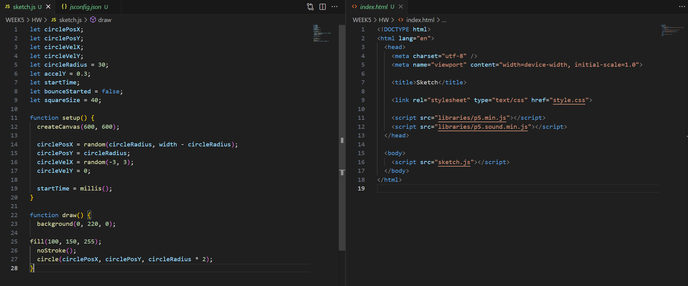
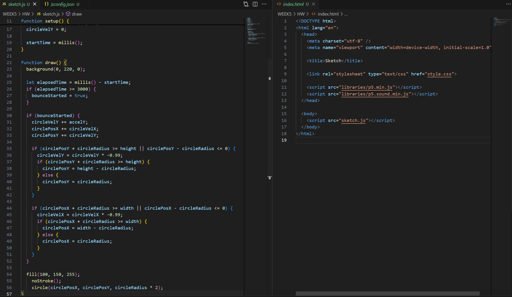
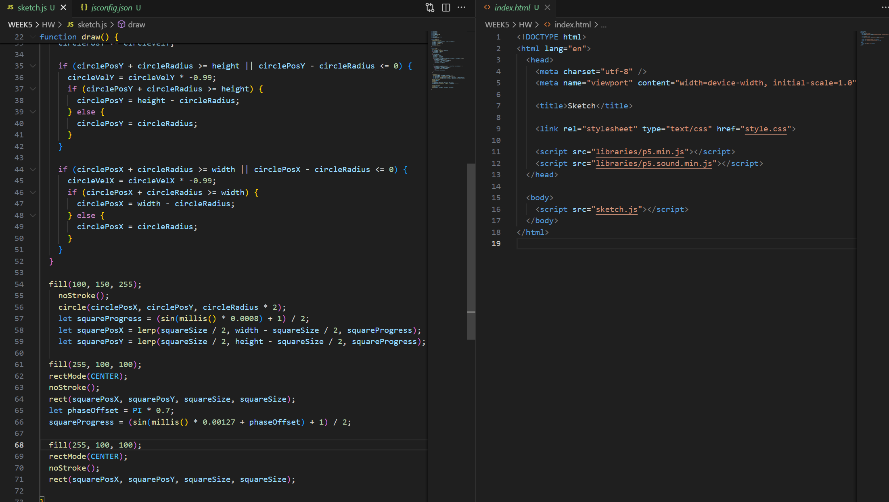
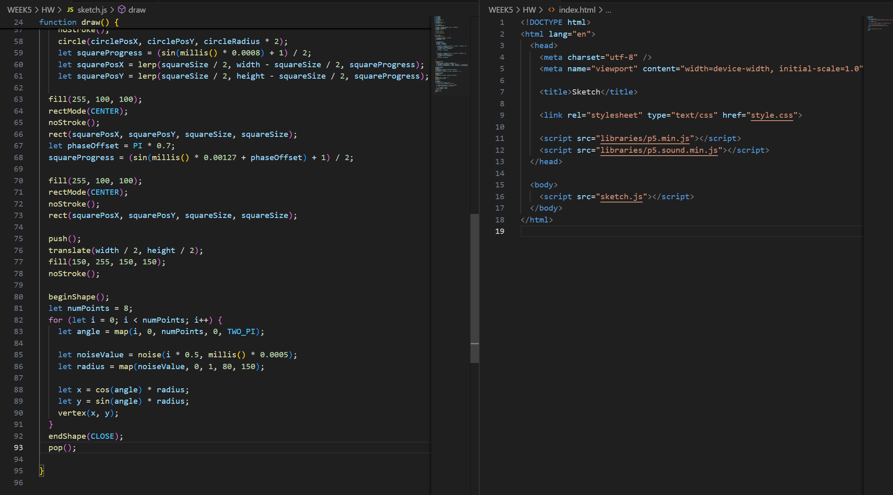
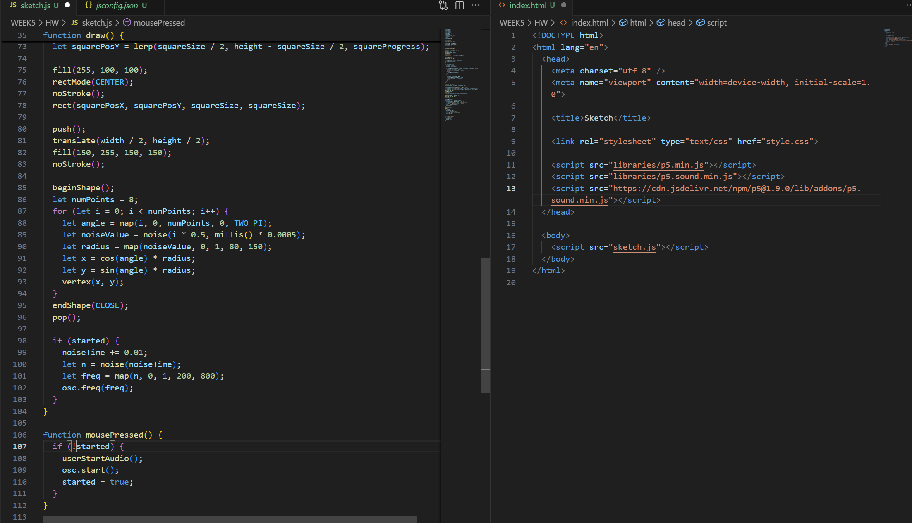
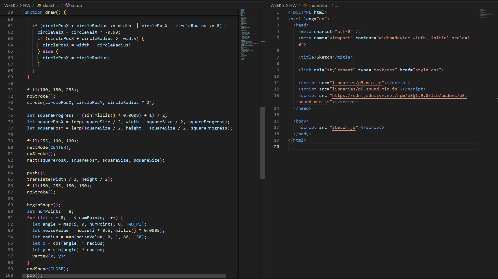

I create variants for the circle and the square,then the initial position the square at, and also its start time

I add gravity for circle, and say" Check if the time has passed 3 seconds, if yes, then the circle start to bound. Also let circle bound back when the edge of circle touch the edge of canvas.

I caculate square's position, use sin to let square do repeated motion.

I caculate rectangles' position to use time function in order to let them be different place, use prime number to do its rate.

I use Berlin noise to create a organic shape, it's a eight-points shapes. Then I add osccilator.

I organize my codes, found that voice doesn't come out, so I ask for help and AI told me I need to add the codes that as users click the canvas, the sound comds out.